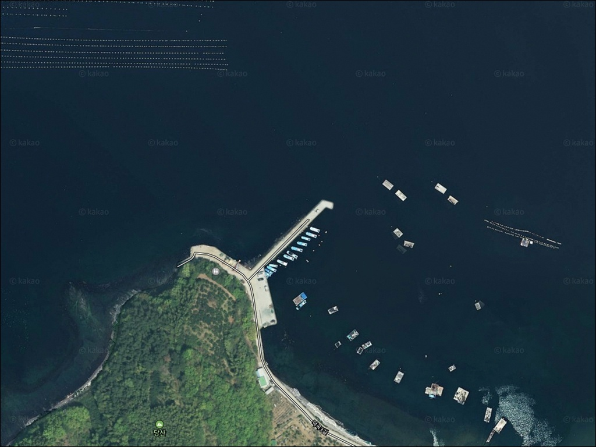
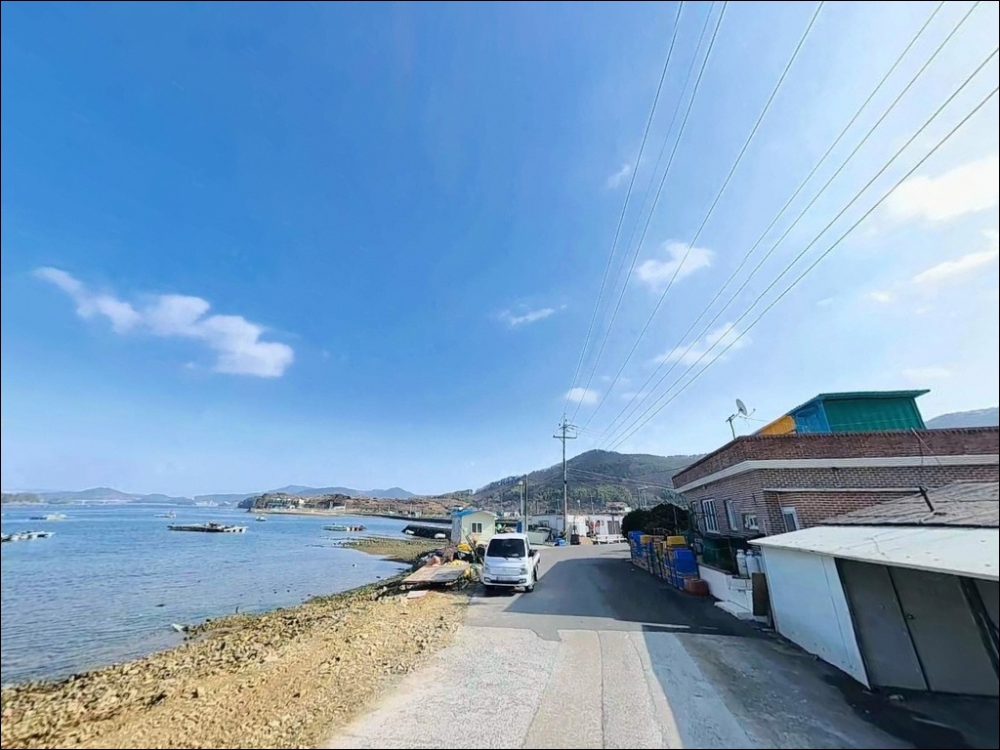
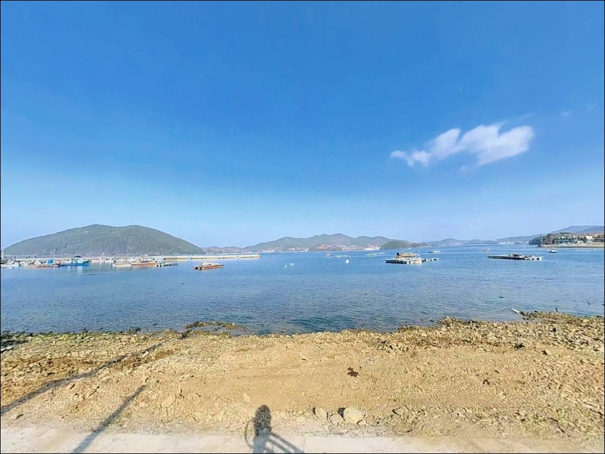
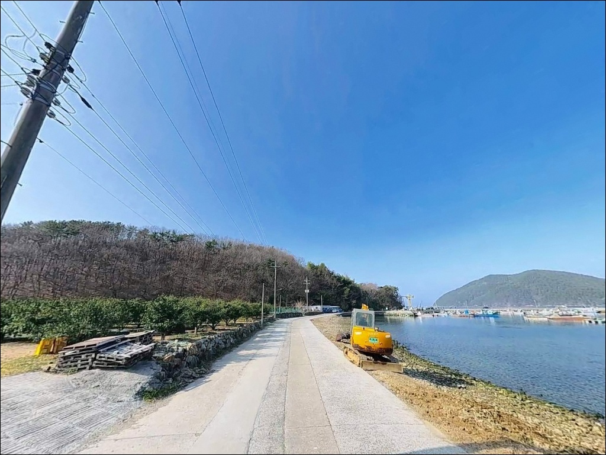
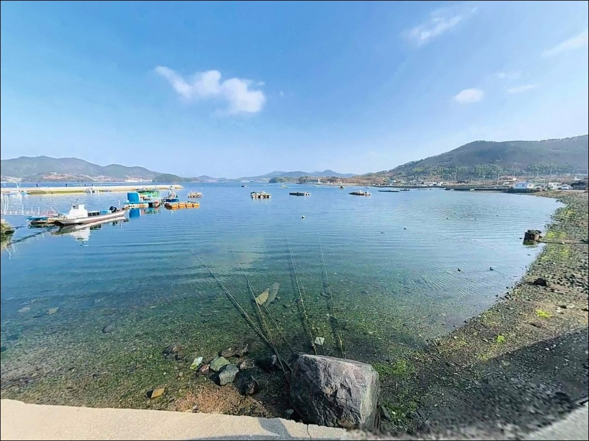
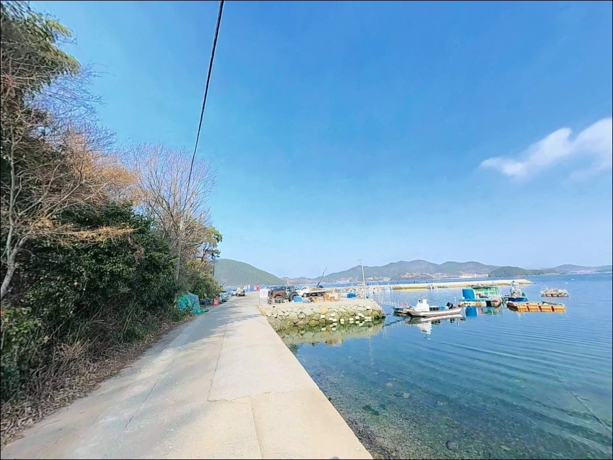
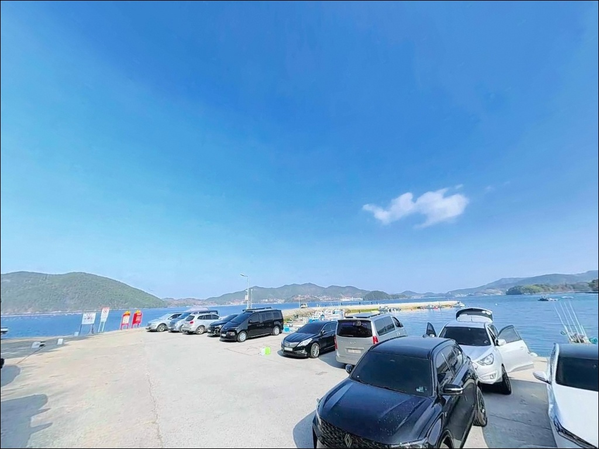
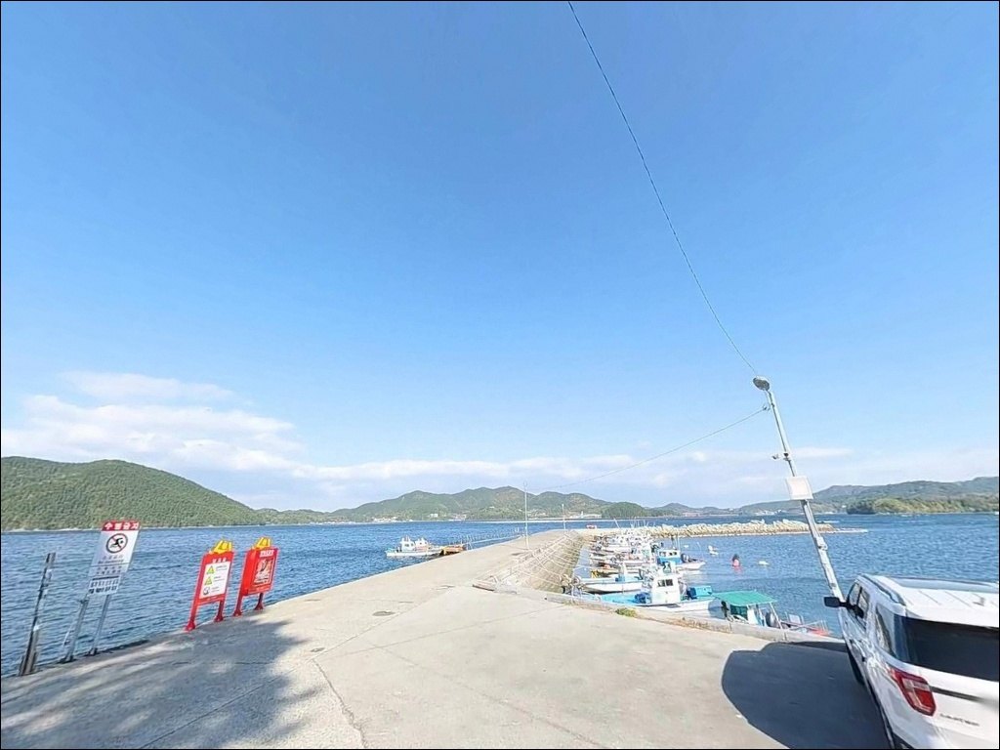
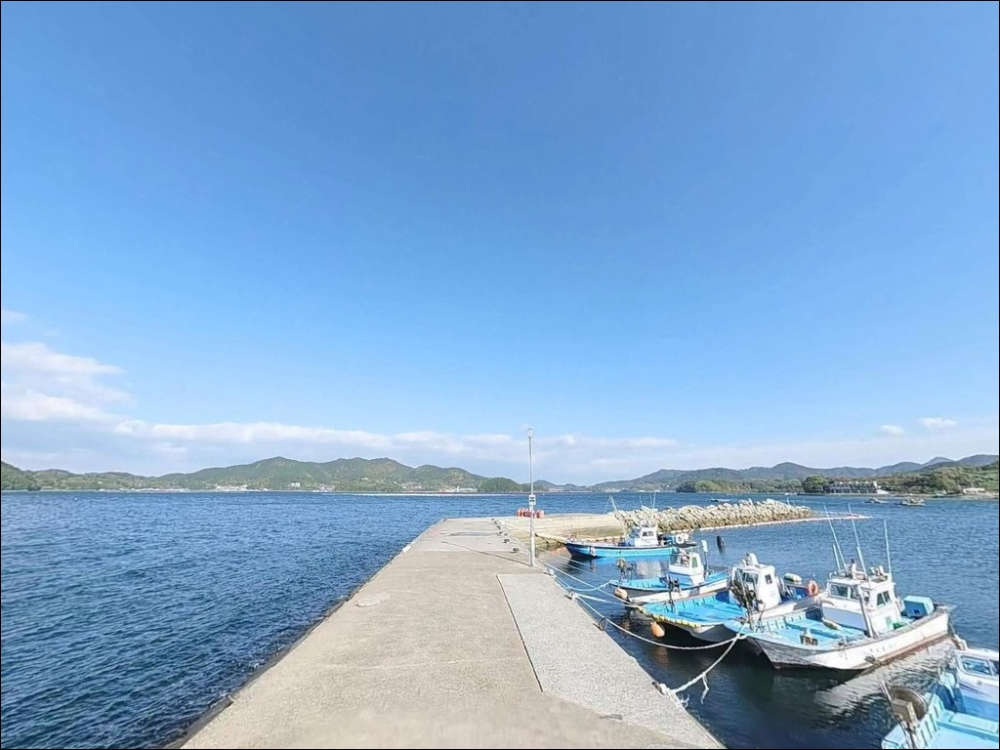

거제 덕곡항 찌낚시, 칠천량 수로 정조 타이밍에 멈춰버린 찌 흐름
이 페이지에는 광고(제휴 링크 포함)가 있으며, 광고 링크를 통해 구매하면 운영자가 판매 수익 또는 수수료를 받을 수 있습니다. 포인트 사진: 카카오맵 스카이뷰·로드뷰. 이 페이지의 지도·사진 이미지는 카카오맵의 실제 서비스 이미지와 다를 수 있습니다.


포인트 안내
덕곡리방파제 (덕곡항)
경남 거제시 하청면 덕곡리 594-46
내만형 구조라 파도 걱정 없다는 판단으로
물때를 확인하지 않고 출발하는 것이
이 포인트에서 가장 자주 틀리는 선택입니다.
조류가 멎는 정조나 물때를 벗어난 타이밍에는
찌채비가 흐르지 않아 자리만 지키다
발길을 돌리는 경우가 생깁니다.
칠천량 수로를 바라보는 덕곡항은
어촌정주어항으로 등록된
약 130m L자형 방파제를 갖춘 포인트입니다.
외항은 테트라포드로 보호되어 있고
내항은 콘크리트 직벽과 석축 구조로 이루어져 있어,
방식에 따라 자리 선택의 폭이 넓습니다.
이 글은 덕곡리방파제의
진입 동선, 차박 여건, 물때 판단 기준,
낚시 스타일별 공략 조건에 집중합니다.
조황 단정이나 특정 어종 보장은
이 글의 범위에 포함되지 않습니다.

1. 진입 동선과 포인트 접근성
하청면 소재지에서 덕곡리방파제까지 이어지는 도로는
포장 상태가 양호하고 폭이 넉넉한 편입니다.
대형 SUV나 카라반 차량도 진입에
무리가 없는 수준이며,
굴곡이 심한 경사 구간 없이
해안을 따라 완만하게 방파제까지 이어지는
구조입니다.
방파제 입구 일대는 광장형으로 넓게 조성되어 있어
대형 차량도 자유롭게 회차할 수 있습니다.
주차는 방파제 입구 좌우측 평탄한 부지를
기본으로 활용하는 방식이며,
차량 여러 대가 여유 있게 배치되는 구조입니다.
어선 정박 동선과 겹치지 않는 자리를
먼저 확인하는 것이 기본입니다.

2. 차박 환경과 야간 체류 여건
덕곡항은 어항 보안등이 방파제 구간을 밝히고 있어
야간에도 시야 확보가 비교적 용이합니다.
마을과는 적당한 거리를 두는 구조이며
주차 공간이 넓어
옆 차량과의 간섭을 줄인 스텔스 차박이
가능한 환경입니다.
칠천량 내만에 위치하는 특성상
외해의 직접 파랑 영향은 거의 없습니다.
바람이 강한 날에도 방파제 구조가
완충 역할을 하는 편이라,
낚시를 마친 뒤 차 안에서 하룻밤 머무는 용도로는
안정적인 체류 환경을 기대할 수 있습니다.
다만 어촌 마을 인근이라 야간에는
불필요한 소음 관리와 조명 범위 조절이 필요합니다.
발전기나 대형 스피커 사용은
자제하는 편이 맞습니다.


3. 주변 편의시설 및 인프라 현황
하청면 소재지는 차량으로 5분 거리에 위치합니다.
농협 하나로마트, 편의점, 주유소, 보건지소가
면소재지 안에 모여 있어
출조 전 마지막 보급이나
현장에서 부족해진 소품 보충이
당일 이동 범위 안에서 가능합니다.
덕곡리 마을회관 인근에
공중화장실이 위치합니다.
방파제에서 도보로 약 3분 거리로,
야간 낚시 중에도 동선이 짧은 편입니다.
응급 상황 발생 시 거제시 고현 방면
대형 병원까지는 차량 15분 거리에 있습니다.

낚시 포인트 방문 전 반드시 확인해야 할 준비 기준
덕곡리방파제 방문 전에 가장 먼저 확인할 것은
물때입니다.
칠천량 수로는 조류 변화가 갑작스러울 수 있어,
바다타임에서 하청면 기준 물때를 확인하고
조금 전후 또는 만조·간조 전후를 기준으로
출발 시각을 맞추는 것이 기본 전략입니다.
바닥이 사질과 펄 혼합 구조라
밑걸림은 많지 않은 편이지만,
외항 테트라포드 구간에서 찌낚시를 할 경우
채비 손실이 생길 수 있어
여분 채비를 넉넉히 준비하는 편이 좋습니다.
야간 낚시 시에는 헤드랜턴과 구명조끼를
반드시 갖춰야 합니다.
덕곡항은 소형 어선들이 오가는 어항입니다.
정박 로프에 채비가 걸리지 않도록 자리를 잡고,
선박 이동 동선을 막지 않는 위치에서
낚시를 시작하는 것이 기본 매너입니다.

5. 지형 기반 낚시 여건 분석
덕곡리방파제는 칠천도와 거제 본도 사이를 가르는
칠천량 수로를 정면으로 바라보는 위치에 있습니다.
L자형 방파제 구조상 끝단 외항부가
수로 방향 조류를 가장 직접적으로 받는 자리이며,
이 구간에서 수심이
5~8m 내외로 안정적으로 형성됩니다.
방파제 발밑은 수중 여와 석축이 발달한 구조이고,
내항 쪽은 사질과 펄이 혼재된 비교적 평이한 바닥입니다.
외항 테트라포드 끝단에서 수로 방향으로
채비를 흘리면 수심 변화 구간을 노릴 수 있고,
내항 쪽에서는 밑걸림 없이
바닥 어종을 탐색하기 좋은 여건입니다.
내만 구조 특성상 파랑 영향은 적지만
조류가 완전히 멎는 정조 타이밍에는
찌채비가 흐르지 않습니다.
물때 계산 없이 입장하면
이 포인트의 장점을 살리기 어렵습니다.
출조 전에 덕곡항 일대 최신 조황을
꼭 검색해 보시기 바랍니다.


6. 포인트에 어울리는 낚시 스타일
이 포인트에서 가장 잘 맞는 방식 중 하나는
찌낚시입니다.
외항 테트라포드 끝단에서
수로 방향 조류를 태워 흘리는 반유동 채비가
효과적이며,
가을부터 겨울에 걸쳐 감성돔과 숭어를
노려볼 수 있는 시즌 폭이 형성됩니다.
볼락 라이트게임도 어울리는 방식입니다.
어항 보안등이 방파제 주변을 밝히는 구간에서
야간에 소형 지그헤드 채비로
볼락과 전갱이를 탐색하는 방식이 유효하며,
특히 여름철에는
화살촉오징어 루어 낚시 패턴도
이 구간에서 적용됩니다.
원투낚시는 내항과 외항 양쪽 모두
대응이 가능한 방식입니다.
바닥이 사질과 펄 혼합 구조라
밑걸림이 적어 채비 손실이 많지 않고,
도다리, 보구치, 붕장어를
노리는 낚시가 이 포인트 바닥 특성과
잘 맞습니다.

7. 대안 포인트와 플랜 B 동선
덕곡리방파제에서 여건이 여의치 않을 때
가장 가까운 대안은
어온항입니다.
같은 하청면 내에 위치하며 거리는 약 2~3km 수준입니다.
공식 어촌정주어항으로 등록된 시설이라
주차와 발판 여건이 덕곡항보다
규모 있게 조성되어 있습니다.
칠천교를 건너 칠천도 방면으로 이동하면
연구항, 물안항 등
칠천도 내 소형 방파제군에 닿을 수 있습니다.
덕곡항에서 약 5~7km 거리이며
같은 칠천량 해역 내만 패턴을 공유하는 곳으로,
에깅과 볼락 라이트게임 포인트가
여러 방파제에 산재해 있습니다.
유계항 방파제도 같은 거제 북서부 해역에 있는
대안 포인트입니다.
약 3km 이내 거리에 위치하며
찌낚시와 원투낚시 중심으로
덕곡항과 유사한 어종 패턴을
기대할 수 있는 곳입니다.

물때 하나 챙기면
덕곡항이 달리 보입니다
찌낚시로 감성돔을 노리거나
야간에 볼락 라이트게임을 즐기는 낚시인이라면
덕곡리방파제의 L자형 구조와
칠천량 수로 조류 여건은
잘 맞는 편입니다.
대형 차량도 부담 없이 진입할 수 있고
하청면 소재지가 5분 거리에 있어
보급 동선도 짧습니다.
반면 물때 계산 없이 정조 타이밍에 도착하거나
외항 테트라포드에서의 찌낚시를 메인으로 잡고 갔는데
조류가 전혀 흐르지 않는 타이밍이라면
이 포인트의 장점을 살리기 어렵습니다.
바다타임 물때 확인, 채비 여분 준비, 어선 동선 파악,
이 세 가지를 갖추면 이 항구는
거제 북서부에서 손에 꼽히는
생활낚시 거점이 됩니다.
어항 보안등 아래 차를 대고
칠천량 수로가 살아나는 물때를 기다리는 하룻밤은
낚시와 차박을 자연스럽게 묶어주는
덕곡항만의 리듬입니다.